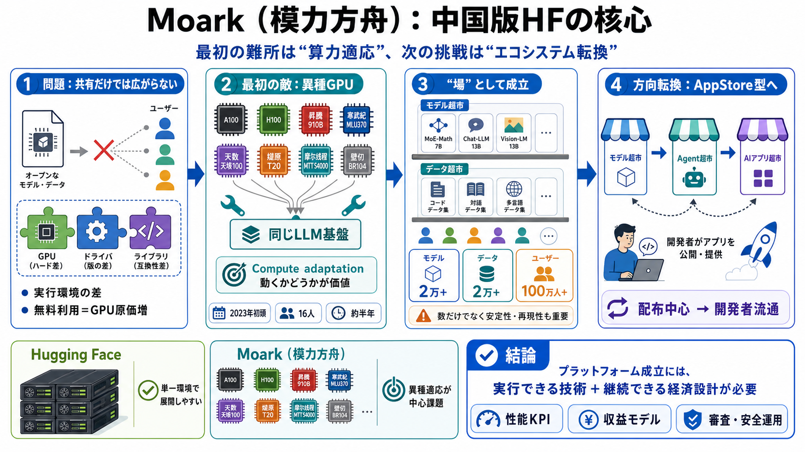

模力方舟（Gitee AI）
丰富的 GPU 与异构支持 我们不仅提供 NVIDIA 全系列 GPU，还率先支持沐曦、昇腾等国产异构算力，提供丰富的国产算力选择。 开箱即用，一键开发 内置主流的训练、推量框架及 Jupyter 开发环境，通过浏览器即可一键进入工作…

中国でもオープンAIモデルを共有する“プラットフォーム”を作る動きの中で、模力方舟（Moark）が直面した最初の難所と、のちに目指した流通モデルを整理します。
LLMは配布・利用の導線（プラットフォーム）なしだと広がりにくく、さらにGPU中心の実行環境は国やメーカーでズレが出ます。無料拡大はコスト増にも直結します。
記事が強調するのは、政治的独立より先に「中国の多様な国产GPU（7〜8種類）を、同じLLM基盤で動かす」実装上の算力適応が最大の壁だった点です。
2023年初頭に16人規模で閉鎖開発を開始し、異種GPUへの適応に半年ほどかけて初期構築へ到達した、とされています。
記事中では、オープンモデルが「2万以上」、データセットも「2万以上」、登録ユーザーは「100万人超」とされています。共有の場としての到達点を示す数字です。
ユーザー増＝GPU利用増で、無料サービスのコストが急上昇します。そこで数年後に、単なる共有から“流通型エコシステム”へ方向転換しようとしています。
方向性として「モデル超市」「Agent超市」「AIアプリ超市」へ進み、開発者がエージェントを作って展開できるAppStore型の生態系を目指します。
記事は「走り方は2本立て」とし、Hugging FaceはNVIDIA環境で展開しやすい一方、Moarkは国产GPUの異種適応という重い実行環境課題を先に解く必要があったと述べます。
主要GPUが同一でないと、演算ライブラリ・メモリ管理・推論最適化・ドライバ/ランタイム差が累積して、動作不具合や性能劣化につながります。記事では半年がかかった、とされています。
成功事例としての語りはある一方、GPU適応の成功率、安定稼働の範囲、性能（レイテンシ/スループット）、コスト（1リクエスト原価）などの指標は本文から確定できません。
Agent超市・AIアプリ超市では、第三者が作るエージェントの安全性・データ取り扱い・悪用耐性が重要になります。流通が増えるほど「審査・監査・保守」が必要です。
模力方舟（Moark）の示唆は、プラットフォームを成立させるには「GPU適応（実行）」と「運用経済（無料の限界）」を同時に解く必要がある、という点です。
丰富的 GPU 与异构支持 我们不仅提供 NVIDIA 全系列 GPU，还率先支持沐曦、昇腾等国产异构算力，提供丰富的国产算力选择。 开箱即用，一键开发 内置主流的训练、推量框架及 Jupyter 开发环境，通过浏览器即可一键进入工作…
feedback feedback # 模力方舟文档中心 模力方舟是一个面向开发者、终端用户与产业场景的 AI 应用共创平台，提供高可用的模型 API 服务、 API 工作流、模型微调服务，帮助开发者打造可落地的 AI 应用，并与用户…
### 3. 国产化适配 国产芯片兼容：支持昇腾、天数、沐曦等国产AI芯片 私有化部署：提供软硬一体机解决方案，保障数据安全 ### 4. 生态服务体系 AI开发者教育：技术分享+实战训练营 模型定制服务：微调、强化学习等专业…
feedback feedback # 模型库 模力方舟的模型库收录了来自全球最优秀的开源模型，涵盖了文本对话、图像处理、计算机视觉、语音识别、视频等多个领域。 ## 功能特性 ### 🔍 智能分类与搜索 多维度分类：按任…
Image 88 数据高保密 实现对用户数据的机密性保护，保证用户数据非本人不可见 Image 89 环境强隔离 通过领先的可信容器沙箱、网络隔离等多维度强制隔离技术，杜绝外部风险入侵和内部数据泄露 Image 90 操作可审…